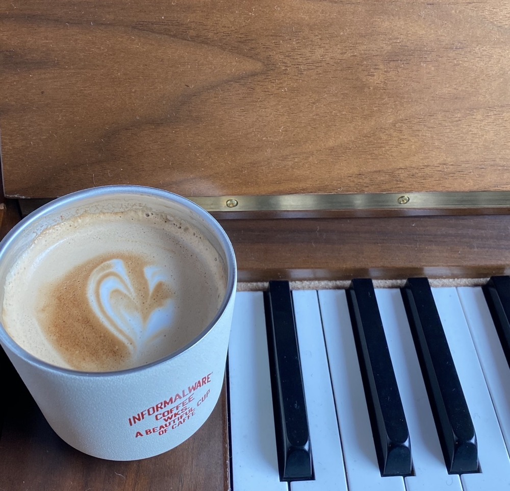

우산과 텀블러 하나 챙겨서 연습실로,
비 오는 날의
연습
01

비 오는 날은
습도가 높습니다.
목이 덜 건조해서
소리 내기가 편합니다.
02
빗소리는
일정해서
다른 소음이
덜 들려요.
03
그래서 내 소리에
집중하기 좋습니다.
04
비 오는 날,
평소보다 한 번 더
연습해 보세요.
05
ENOCH MUSIC ACADEMY
에녹실용음악학원 시흥점
031 315 3666
경기도 시흥시 은행로 157 2층
체험수업 · 네이버 플레이스 예약